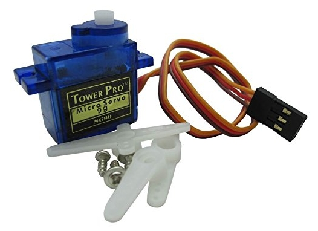

교육용으로 많이 사용하는 소형 서보모터 입니다.
소형이고 가볍지만 토크가 많이 약해 응용해서 사용하기는 힘듭니다.
- Motor
- Sensor
- Bluetooth
SG90

동작 전압 : 4.8 ~ 7.8V
소비 전류 : 0.2 ~ 0.7A
회전 각도 : 0 ~ 180도
토크 : 1.8kg*cm
MG995
메탈기어를 이용한 소형 서보모터입니다.
토크가 강하여 여러가지로 응용할 수 있습니다.
무게가 조금 무거운편이며,소비 전류가 높아 보드 전원 만으로는 작동하는데 힘들기 때문에 외부전원을 반드시 연결해야 합니다.
토크가 강하여 여러가지로 응용할 수 있습니다.
무게가 조금 무거운편이며,소비 전류가 높아 보드 전원 만으로는 작동하는데 힘들기 때문에 외부전원을 반드시 연결해야 합니다.
동작 전압 : 4.8 ~ 7.8V
소비 전류 : 0.5 ~ 0.9A
회전 각도 : 0 ~ 180도
토크 : 9.4kg*cm(4.8V), 11kg*cm(6V)
L298N
보편적으로 아두이노에서 많이 사용하는 DC모터 드라이버 입니다.
아두이노에 DC모터를 직접 연결하여 작동시키는 것은 여러모로 불편하기 때문에 드라이버를 이용하여 사용합니다.
추가로 스텝 모터도 제어할 수 있습니다.
아두이노에 DC모터를 직접 연결하여 작동시키는 것은 여러모로 불편하기 때문에 드라이버를 이용하여 사용합니다.
추가로 스텝 모터도 제어할 수 있습니다.
입력 전압 : 5 or 12V
허용 전류 : 2A(MAX)
DHT11/22
정전식 대기 온습도 측정 센서 입니다.
주로 온도측정에 사용하며 DHT11(우) 보다는 DHT22(좌)가 정밀도가 높습니다.
주로 온도측정에 사용하며 DHT11(우) 보다는 DHT22(좌)가 정밀도가 높습니다.
동작 전압 : 5V/(3.3 ~ 5V)
온도 : 0 ~ 50℃(±2℃)/-40 ~ 80℃(±0.5℃)
습도 : 20 ~ 80%(±5%)/0 ~ 100%(±2%)
HC-SR04
초음파를 이용한 거리측정 센서 입니다.
단단한 물체는 100%반사되어 거리측정이 잘 되지만, 옷감 처럼 부드러운 소제들의 거리는 측정값이 정확하지 않습니다.
정밀도가 높은 P14라는 상위모델도 있습니다.
단단한 물체는 100%반사되어 거리측정이 잘 되지만, 옷감 처럼 부드러운 소제들의 거리는 측정값이 정확하지 않습니다.
정밀도가 높은 P14라는 상위모델도 있습니다.
입력 전압 : 5V
허용 전류 : 15mA
측정 범위 : 2cm ~ 4M
측정 각도 : 15도
HC-06
Bluetooth를 사용할 수 있게 해주는 블루투스 모듈 입니다.
핸드폰등 다양한 블루투스 기기에 연결이 가능합니다
저전력으로 기동하지만 통신속도가 느립니다.
핸드폰등 다양한 블루투스 기기에 연결이 가능합니다
저전력으로 기동하지만 통신속도가 느립니다.
동작 전압 : 3.3V
동작 전류 : 40mA